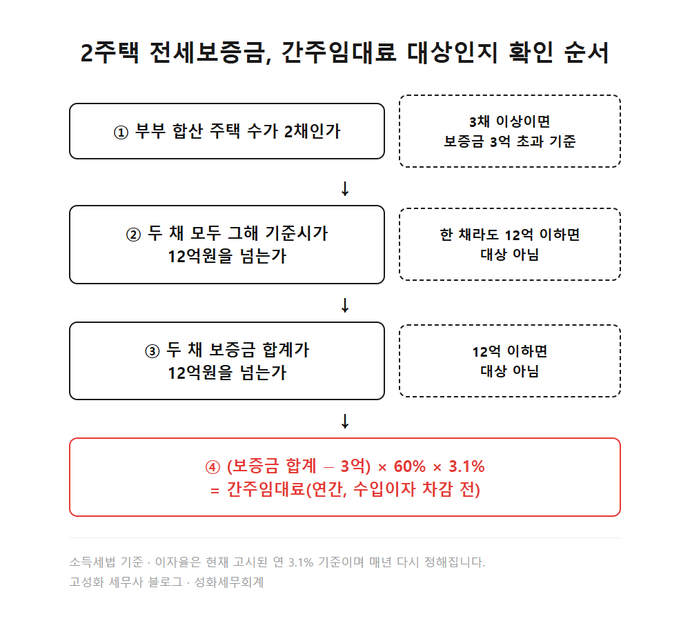
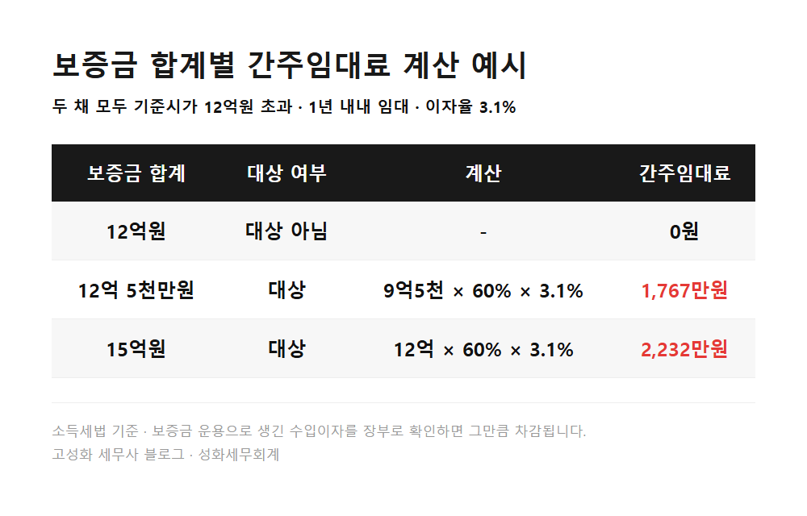
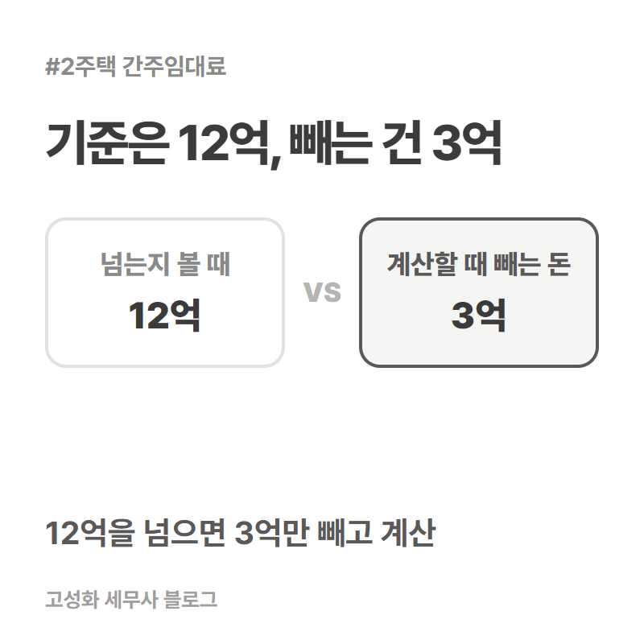
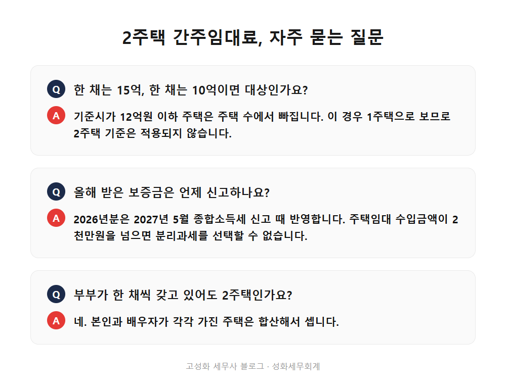

← 세무칼럼 목록
부동산·상속·증여

2주택 전세보증금 12억 간주임대료, 3억만 빼고 계산
아파트 두 채를 모두 전세로 주신 집주인분들이 요즘 자주 들으시는 말이 있습니다.
"이제 2주택도 전세보증금에 세금이 붙는다던데요."
맞는 말입니다. 다만 2주택이라고 다 해당하지는 않습니다.
두 채 모두 그해 기준시가가 12억원을 넘고, 두 채 보증금 합계도 12억원을 넘으면 간주임대료가 생깁니다.
이 글에서 다루는 내용
- 2주택 간주임대료, 세 가지가 모두 맞아야 생깁니다
- 12억을 넘으면 3억만 빼고 계산합니다
- 내 경우에 대입할 때 헷갈리는 네 가지
한눈에 보기




자주 묻는 질문
한 채는 기준시가 15억, 한 채는 10억이면 대상인가요?
12억 이하인 주택은 주택 수에서 빠지므로 2주택 기준은 적용되지 않습니다.
올해 받은 보증금은 언제 신고하나요?
2026년분은 2027년 5월 종합소득세 신고 때 반영합니다.
부부가 한 채씩 갖고 있어도 2주택인가요?
네. 본인과 배우자의 주택은 합산해서 셉니다.
정리하면
두 채 모두 기준시가 12억 초과, 보증금 합계 12억 초과.
이 두 가지를 넘으면 3억만 빼고 계산한 간주임대료가 임대 수입으로 잡힙니다.
기준은 단순한데, 내 집에 대입하면 부부 합산, 공동명의 지분, 그해 공시가격, 중간에 바뀐 계약까지 같이 봐야 해서 손이 꽤 갑니다.
재계약 전이라면 지금 한 번 계산해두시는 게 좋을 것 같아요. 두 채의 전세계약서와 공시가격만 준비해서 편하게 문의 주세요.
본문 전체와 근거 조문은 블로그에서 확인하실 수 있습니다.